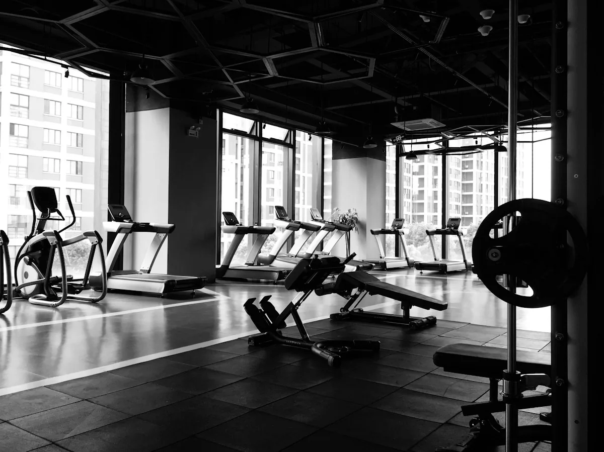
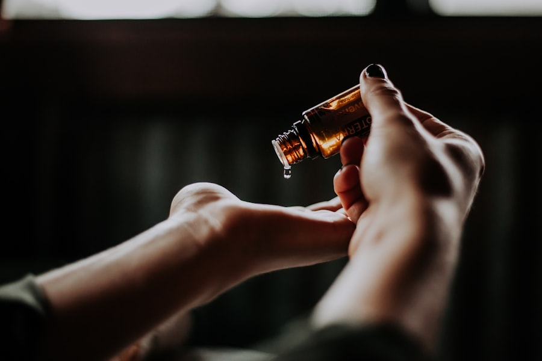
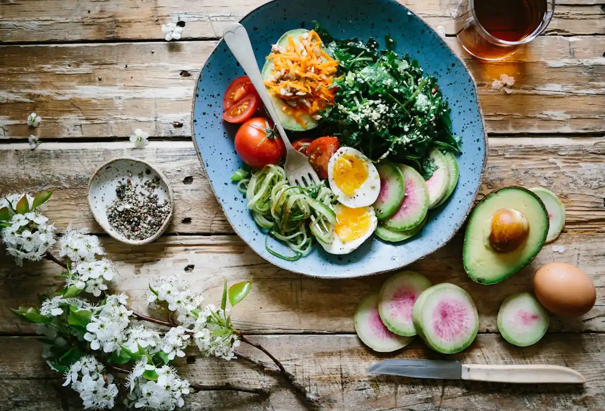

Recovery
Why contrast hydro works after long desk days
Warm-to-cool cycles cue the parasympathetic system without drama or extremes.
Journal
Short essays on recovery science, ritual design, and living with a quieter nervous system.

Current issue · Vol. 14 · Night Tide
This month’s lead essay on slowed contrast cycles, quieter metrics, and why the hydro wing stopped racing the clock.
Warm-to-cool cycles cue the parasympathetic system without drama or extremes.

What fascia responds to when therapists stop racing the clock.
Lighting, scent load, and seating angles that invite stillness.
A practical guide to the ranges we use after evening treatments.
Simple mineral-forward meals that support, not overwhelm, recovery.
Why we ask about sleep, screens, and shoulder story before we begin.

The exact pacing we teach before members leave Mind Studio.
How to arrive, rinse, and settle so the water does the talking.

How Bloom members space treatments so progress actually sticks.
Lexicon
A living glossary from the treatment floor — not marketing, just shared language.
The window after dusk when contrast hydro and low light are paired on purpose.
The last ten minutes of a ritual — tea, robe, no rush back to Tideglass Lane.
A measured soak or wrap length; never “as long as you like.”
How much aroma a suite carries. Ours stays light so the nervous system can drop.
Space and timing as the amenity — not louder branding in the room.
Membership rhythm that protects recovery instead of stacking bookings.
Longread
e used to rush the doorway questions. Now the first five minutes decide the next ninety — sleep debt, screen weight, and where the shoulders tell on the week.
“If the answer about sleep makes someone sit taller, we already know the pace.”
That single cue rewrites pressure maps, oil choice, and whether hydro comes before or after touch. The essay in the archive walks through the full script we train every new guide on.
Find the full noteSeries
Ongoing threads with chapter lists — read in order, or open wherever the week needs.
Hydro timing, contrast cycles, and evenings that finally soften. Written for members who keep arriving after dark.
Facial protocols, salt wraps, and skin that looks rested — not staged. For weeks when the face holds the stress first.
Exit rituals, aftercare, and how members leave slower than they arrived — the last ten minutes matter as much as the first.
Shoulders, screens, and recovery after dense work weeks — practical notes from the restorative floor.
Notes from Tideglass Lane — how the centre grew, what we kept, and the craft decisions that still shape every suite.
Night desk
A visual brief from the floor — the same marks guides leave in the shared ledger so every room opens already quiet.
Ledger marks
First cue the room is ready — temperature set before the guest crosses the threshold.
Overhead stays off during intake. Wall wash keeps the nervous system from bracing.
Blends are chosen only after the guide hears sleep, screens, and where tension sits.
Music stays out unless requested. Silence is part of the protocol, not an empty room.
Tea station and soft landing seat prepared before treatment ends — never rushed at the door.

“If the answer about sleep makes someone sit taller, we already know the pace.”
Mira Chen · Restorative floor
Practice
Not a challenge — small checks you can keep beside the kettle.
Write one sentence about what your shoulders carried today.
End a shower with thirty seconds of cooler water. Notice the exhale.
Dim one overhead lamp an hour earlier than usual.
Eat without a screen for the length of one song.
Ten minutes of still sitting before bed — no fixing, only noticing.
Index
Browse by year — each volume holds the essays that shaped that season of care.
9 essays · contrast, sleep, and quieter hydro
11 essays · shoulders, screens, aftercare
7 essays · breath, rooms, attention
8 essays · temperature, soak etiquette
Archive · founding experiments

Finished reading? Book a ritual or tour the suites with a senior guide.